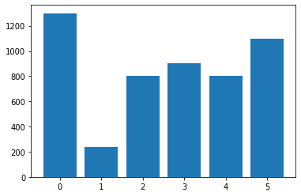
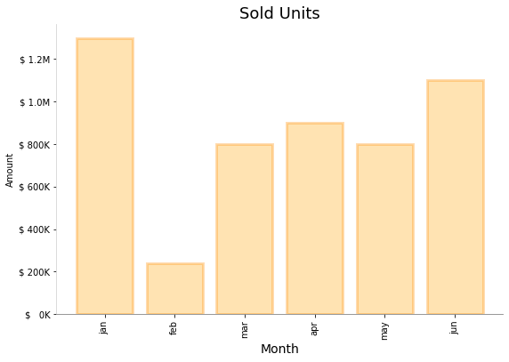
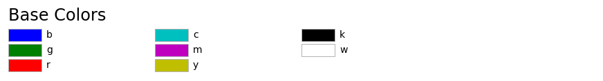
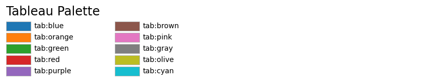
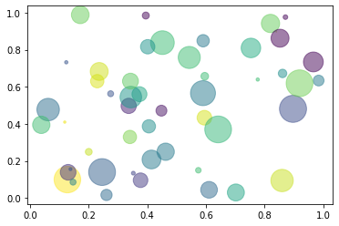
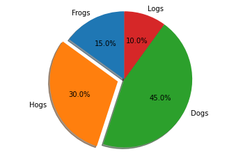
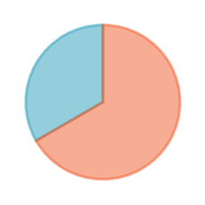
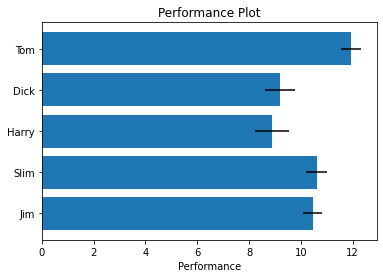
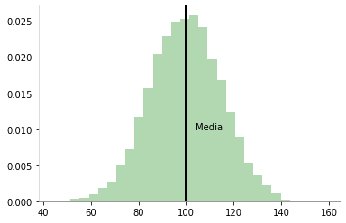
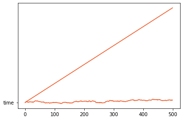

Introducción a Matplotlib¶
90:00 min | Última modificación: Septiembre 1, 2021 | [YouTube]
Python ofrece varias librerías para visualización de datos, que son ampliamente usadas en la práctica.
Al final este tutorial, usted estará en capacidad de:
Elaborar gráficos simples con matplotlib.
Personalizar colores, titulos y demás elementos de la figura.
Ajustar ejemplos disponibles para sus propias necesidades.
Ciclo de construcción de una gráfica¶
[2]:
#
# Codigo inicial.
# Se verifica que se tenga una gráfica con
# valores de sus parámetros por defecto.
#
import matplotlib.pyplot as plt
#
# Data
#
amount_in_k = [1300, 240, 800, 900, 800, 1100]
month = "jan,feb,mar,apr,may,jun".split(",")
plt.bar(
range(len(month)),
amount_in_k,
)
plt.show()

[2]:
#
# Personalización.
# En cada paso se verifican los cambios.
#
#
# Paso 1: se ajusta el tamaño del grafico
#
plt.figure(figsize=(9,6))
#
# Paso 2: se agregan las propiedades y los nombres
# de los ejes
#
plt.bar(
range(len(month)),
amount_in_k,
color="orange",
alpha=0.3,
edgecolor='darkorange',
linewidth=3,
)
plt.title('Sold Units', fontsize=18)
plt.xlabel('Month', fontsize=14)
plt.ylabel('Amount')
#
# Paso 3: Formatea el eje X
#
plt.xticks(
range(6),
month,
rotation="vertical",
)
#
# Paso 4: Se ajusta el eje Y
#
import matplotlib.ticker as tick
#
# Función para formatear la cantidad. Note
# que retorna un string
#
def y_fmt(x, pos):
if x >= 1e3:
s = "$ {:1.1f}M".format(x * 1e-3)
else:
s = "$ {:3.0f}K".format(x)
return s
plt.gca().yaxis.set_major_formatter(
tick.FuncFormatter(y_fmt),
)
#
# Paso 5: se formatea el fondo
#
plt.gca().spines["left"].set_color("lightgray")
plt.gca().spines["bottom"].set_color("gray")
plt.gca().spines["top"].set_visible(False)
plt.gca().spines["right"].set_visible(False)
plt.show()




pyplot.plot()¶
[3]:
#
# Generación de los datos
#
x = [x for x in range(-4, 5)]
y = [i ** 2 for i in x]
#
# Markers: https://matplotlib.org/stable/gallery/lines_bars_and_markers/marker_reference.html
# linestyle: {'-', '--', '-.', ':', '', (offset, on-off-seq), ...}
#
plt.plot(
x,
y,
color='red',
marker='s',
linestyle='-',
linewidth=2,
)
plt.show()

pyplot.scatter()¶
[3]:
# https://matplotlib.org/stable/gallery/shapes_and_collections/scatter.html
import numpy as np
np.random.seed(123456)
N = 50
x = np.random.rand(N)
y = np.random.rand(N)
colors = np.random.rand(N)
area = (30 * np.random.rand(N)) ** 2
plt.scatter(
x,
y,
s=area,
c=colors,
alpha=0.5,
)
plt.show()

pyplot.pie()¶
[4]:
# https://matplotlib.org/stable/gallery/pie_and_polar_charts/pie_features.html
labels = "Frogs", "Hogs", "Dogs", "Logs"
sizes = [15, 30, 45, 10]
explode = (0, 0.1, 0, 0)
plt.pie(
sizes,
explode=explode,
labels=labels,
autopct="%1.1f%%",
shadow=True,
startangle=90,
)
plt.gca().axis("equal")
plt.show()

pie()¶
[4]:
data = [15, 30]
plt.subplots()
colors = ['#2A9FBC', '#F15B2A']
wedges, texts = plt.pie(
data,
startangle=90,
colors=colors,
wedgeprops=dict(linewidth=3, alpha=0.5),
)
for i, w in enumerate(wedges):
w.set_edgecolor(colors[i])

pyplot.barh()¶
[5]:
# https://matplotlib.org/stable/gallery/lines_bars_and_markers/barh.html
np.random.seed(12456)
people = ("Tom", "Dick", "Harry", "Slim", "Jim")
performance = 3 + 10 * np.random.rand(len(people))
error = np.random.rand(len(people))
y_pos = np.arange(len(people))
plt.barh(
y_pos,
performance,
xerr=error,
align="center",
)
plt.gca().set_yticks(y_pos)
plt.gca().set_yticklabels(people)
plt.gca().invert_yaxis()
plt.gca().set_xlabel("Performance")
plt.gca().set_title("Performance Plot")
plt.show()

pyplot.hist()¶
[22]:
# https://matplotlib.org/stable/gallery/pyplots/pyplot_text.html#sphx-glr-gallery-pyplots-pyplot-text-py
np.random.seed(12345)
mu, sigma = 100, 15
x = mu + sigma * np.random.randn(10000)
n, bins, patches = plt.hist(
x,
bins=30,
density=True,
facecolor="g",
alpha=0.3,
)
mean = x.mean()
plt.axvline(
mean,
color="black",
linewidth=3,
)
plt.text(x=mean+4, y=0.01, s='Media')
plt.gca().spines["left"].set_color("lightgray")
plt.gca().spines["bottom"].set_color("gray")
plt.gca().spines["top"].set_visible(False)
plt.gca().spines["right"].set_visible(False)

fill_between()¶
[17]:
plt.plot(time_df, color="#F15B2A")
plt.fill_between(
range(len(time_df)),
time_df,
len(time_df) * [min(time_df)],
alpha=0.2,
color="#F15B2A",
)
plt.plot(len(time_df)- 1, time_df[-1], 'ro')
---------------------------------------------------------------------------
ValueError Traceback (most recent call last)
<ipython-input-17-0d0c7be5b692> in <module>
5 len(time_df) * [min(time_df)],
6 alpha=0.2,
----> 7 color="#F15B2A",
8 )
9
/usr/local/lib/python3.6/dist-packages/matplotlib/pyplot.py in fill_between(x, y1, y2, where, interpolate, step, data, **kwargs)
2558 return gca().fill_between(
2559 x, y1, y2=y2, where=where, interpolate=interpolate, step=step,
-> 2560 **({"data": data} if data is not None else {}), **kwargs)
2561
2562
/usr/local/lib/python3.6/dist-packages/matplotlib/__init__.py in inner(ax, data, *args, **kwargs)
1563 def inner(ax, *args, data=None, **kwargs):
1564 if data is None:
-> 1565 return func(ax, *map(sanitize_sequence, args), **kwargs)
1566
1567 bound = new_sig.bind(ax, *args, **kwargs)
/usr/local/lib/python3.6/dist-packages/matplotlib/axes/_axes.py in fill_between(self, x, y1, y2, where, interpolate, step, **kwargs)
5155 if array.ndim > 1:
5156 raise ValueError('Input passed into argument "%r"' % name +
-> 5157 'is not 1-dimensional.')
5158
5159 if where is None:
ValueError: Input passed into argument "'y1'"is not 1-dimensional.
